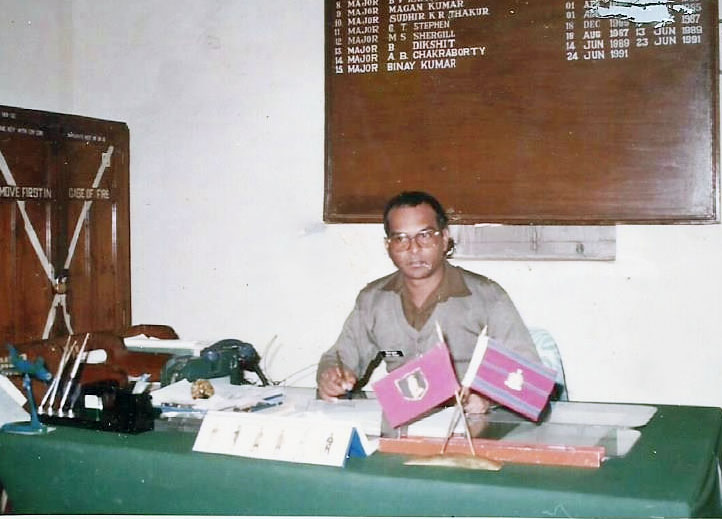
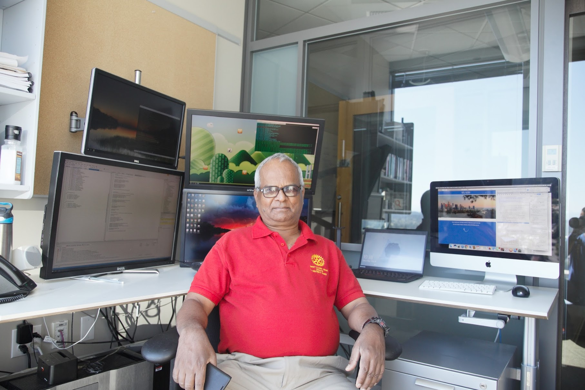
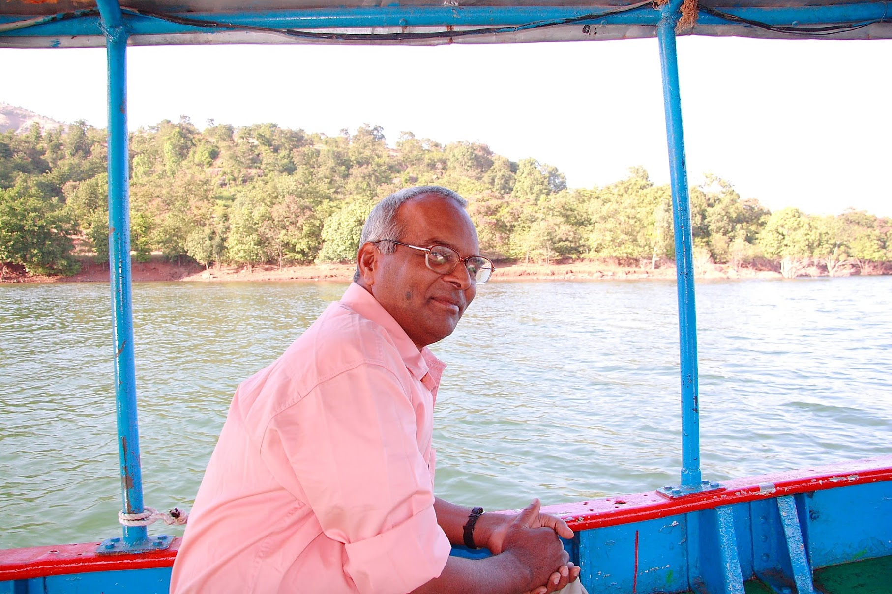
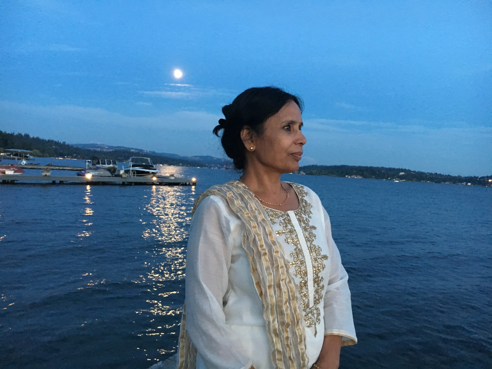

About Us
The Rohini Devi Rotary is built upon the lifelong values and service journeys of Col. Binay Kumar (Retd) and Mrs. Saroj Kumar. Their commitment to education, rural development, and humanitarian service continues to guide every initiative across Hazaribagh.


Col. Binay Kumar (Retd)



Education
- B.Sc. Agriculture (1971)
- M.Sc. Agriculture — ICAR JRF (1974)
- Bachelor’s in Civil Engineering, CME Pune (1984)
- Defence Services Staff College Graduate (1988)
- LLB (2021)
Military Service
- Commissioned in 1975
- Served with the Indian Peace Keeping Force in Sri Lanka
- Key staff appointments: DAQMG, BM
- Commanded an Engineer Regiment during Kargil (Op Vijay, 1999)
- Retired in 2005
Second Innings & Social Work
- Returned to Masipiri to develop Prakriti Biotech Farm
- Joined Rotary in 2012
- Founded the Rohini Devi Rotary Eye Hospital
- Established women’s vocational empowerment initiatives
- Inventor of the Prakriti Jal Urja Pump — National Award (2010)
Mrs. Saroj Kumar


Education
- B.A. Political Science (1975)
- B.Ed (1984)
Career & Community Work
- Primary school teacher for 15 years
- Active member of Inner Wheel and Rotary
- Trustee & administrator of the Eye Hospital
- Provides hands-on care and support to admitted patients